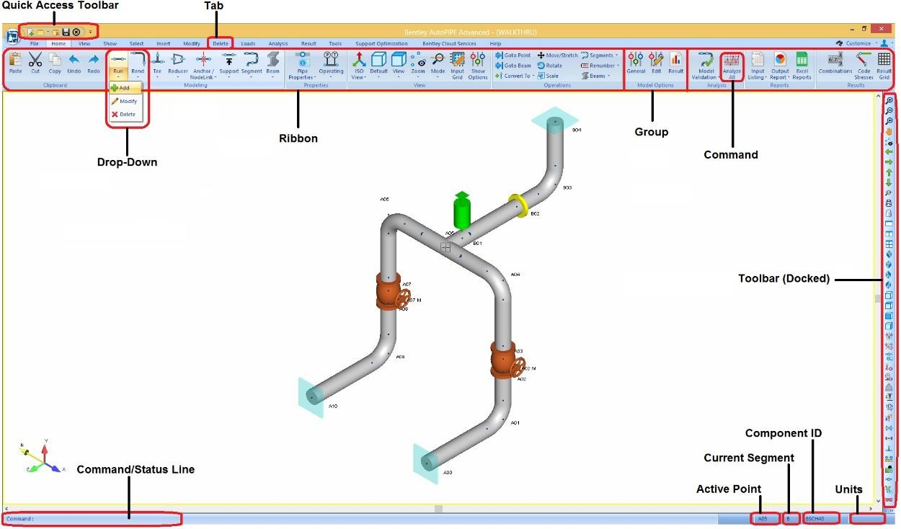
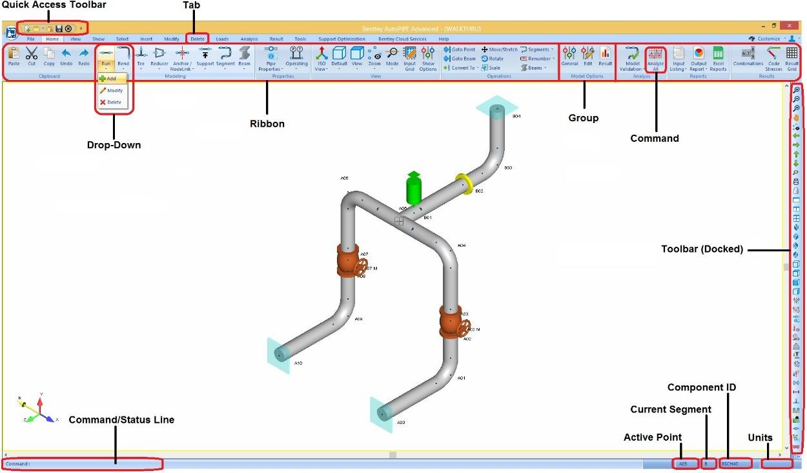

Screen Layout
Take some time to familiarize yourself with AutoPIPE’s interface by examining the areas of the
screen annotated below.

Take some time to familiarize yourself with AutoPIPE’s interface by examining the areas of the
screen annotated below.
